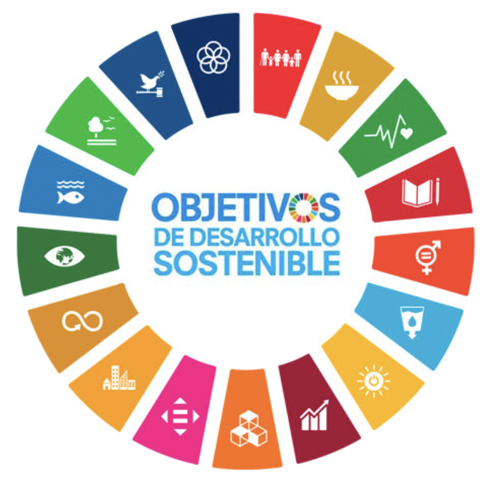

Partes del ojo. Guía de protección del ojo.
Hacemos la siguiente actividad para repasar las partes del ojo.

Los ODS son una llamada global para promover la prosperidad y el bienestar para todos, mientras se protege el planeta. Son 17 objetivos ambiciosos, que abarcan desde la eliminación de la pobreza hasta la acción climática, y que buscan transformar nuestro mundo en uno más justo, inclusivo y sostenible.
Los ODS pueden llegar a ser un enfoque útil para abordar temas actuales En esta REA nos podemos centrar en el objetivo 3 "Salud y Bienestar", planteando una guía de protección y cuidado de nuestros ojos y de la visión.
La actividad que os propongo para este apartado será elaborar una infografía en grupo de 4, donde se debe incluir 10 consejos para la protección y cuidados de los ojos y de la visión.
Una vez que la tengáis hecha se subirá a un documento compartido en google doc.